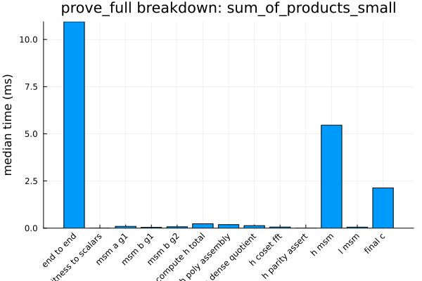
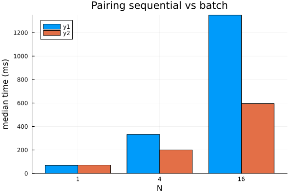

Benchmark Snapshots
This page preserves the longer benchmark notes from recent Groth.jl performance passes. For the benchmark workflow and external primitive comparisons, see Benchmarks.
- Benchmark Snapshots
- Stage 8 Snapshot (2026‑04‑01)
- Stage 8A Snapshot (2026‑04‑02)
- QAP Domain, H Quotient, and H/L MSM Snapshot (2026-05-11)
- Setup Query Generation Snapshot (2026-05-11)
- Safe G2 Subgroup GLV Snapshot (2026-05-11)
- G1 GLV-MSM Prover Snapshot (2026-05-11)
- Limb-Native GLV Decomposition Snapshot (2026-05-11)
- Final Exponentiation / GT Snapshot (2026-05-11)
- Latest Snapshot (2025‑09‑29)
- Plots
Stage 8 Snapshot (2026‑04‑01)
The current Stage 8 prover re-baseline artifact is:
benchmarks/artifacts/2026-04-01_220953/results/benchmark_results.json
Relative to the last pre-Stage-8 prove_full baseline (2026-04-01_174156), the continuity fixture improved but the primary larger fixture stayed effectively flat:
sum_of_products_smallprove_full:9.219 ms -> 8.248 msfinal_c:4.015 ms -> 2.983 ms
generated_24_constraintsprove_full:30.045 ms -> 30.088 msfinal_c:4.072 ms -> 3.001 msmsm_b_g2:4.509 ms -> 4.714 msh_msm:7.310 ms -> 7.805 msl_msm:3.989 ms -> 4.210 ms
So the backend rewrite clearly reduced final proof assembly cost, but the current prover baseline says the next real wins still need to come from the MSM-heavy prover buckets rather than from final_c.
Stage 8A Snapshot (2026‑04‑02)
The Stage 8A scalar-plumbing follow-through artifacts are:
benchmarks/artifacts/2026-04-01_223814/results/benchmark_results.jsonbenchmarks/artifacts/2026-04-01_223859/results/benchmark_results.json
Stage 8A removed the prover’s hot BN254Fr -> BigInt scalar conversions and then reran the prove_full baseline.
On the direct scalar-plumbing comparison for the main deterministic fixture:
scalar_mul(delta_g1, r):0.737 ms -> 0.720 msscalar_mul(delta_g2, s):2.442 ms -> 2.355 msA_queryMSM:3.019 ms -> 2.937 msB_query_g2MSM:4.477 ms -> 4.299 msHMSM:7.198 ms -> 7.128 msLMSM:3.993 ms -> 3.873 ms
Relative to the first Stage 8 prove_full baseline (2026-04-01_220953):
generated_24_constraintsprove_full:30.088 ms -> 28.873 msmsm_b_g2:4.714 ms -> 4.334 msh_msm:7.805 ms -> 7.036 msl_msm:4.210 ms -> 3.856 msfinal_c:3.001 ms -> 2.804 ms
sum_of_products_smallprove_full:8.248 ms -> 8.614 ms
The most important profiler result is qualitative as well as quantitative: the main Stage 8A prove_full dump no longer contains canonical_bigint or limbs_to_bigint. The prover still creates BigInts elsewhere, but the measured hot prover scalar-conversion path identified in Stage 8 is now gone.
QAP Domain, H Quotient, and H/L MSM Snapshot (2026-05-11)
The latest QAP-domain-aligned Stage 8 prover fixture run is:
- tracked summary:
docs/src/assets/prove_full_msm_tuning_2026_05_11.json - local full artifact:
benchmarks/artifacts/2026-05-11_165756/results/benchmark_results.json
This run uses the arkworks-shaped QAP domain: active constraints first, public-input selector rows next, and zero padding to the next power of two. prove_full computes H through the coset-only quotient path and now combines the H and L contributions into one G1 MSM because the C proof element only uses H + L. The checked dense/coset helper remains covered by tests. The fixture setup still proves once and asserts verify_full before timing.
sum_of_products_small- constraints/public/domain:
3 / 6 / 16 prove_full:10.943 mscompute_h_total:0.234 msh_msm:5.458 msl_msm:0.055 msh_l_msm:5.619 msfinal_c:2.133 ms
- constraints/public/domain:
generated_24_constraints- constraints/public/domain:
24 / 8 / 32 prove_full:26.643 mscompute_h_total:1.481 msh_msm:8.726 msl_msm:3.871 msh_l_msm:11.029 msfinal_c:2.140 ms
- constraints/public/domain:
The generated fixture MSM selections recorded in the tracked summary are:
| Query | Size | Selected backend |
|---|---|---|
| A query G1 | 28 | pippenger_w3 |
| A/B1 fused G1 | 28 | pippenger_pair_w2 |
| B query G2 | 28 | pippenger_w2 |
| H query G1 | 31 | pippenger_w3 |
| L query G1 | 20 | pippenger_w3 |
| H+L query G1 | 51 | pippenger_w5 |
| Generated fixture | Small fixture |
|---|---|
 |  |
Interpretation: the small fixture intentionally gets a larger domain because 3 constraints + 6 public rounds up to 16, so it is no longer directly comparable to the old constraint-only domain timing. The larger fixture already rounds to 32, so it remains the better continuity fixture for prover-shaped tuning. Relative to the previous coset-only H baseline 2026-05-11_133047, the generated fixture improved prove_full by 6.96% and final_c by 5.14%.
Setup Query Generation Snapshot (2026-05-11)
The setup-focused artifact is:
- tracked summary:
docs/src/assets/setup_full_tuning_2026_05_11.json - local full artifact:
benchmarks/artifacts/2026-05-11_175228/results/benchmark_results.json
The setup profile times setup_full on the same deterministic fixtures used by the prover benchmark. It proves and verifies once per fixture before timing, so the measured keys are checked for end-to-end Groth16 usability.
| Fixture | Domain | Baseline median | Current median | Change |
|---|---|---|---|---|
sum_of_products_small | 16 | 47.910 ms | 46.007 ms | -3.97% |
generated_24_constraints | 32 | 142.715 ms | 116.918 ms | -18.08% |
Interpretation: the setup sweep showed that G1 fixed-base w-NAF is not the best choice for the full-width setup scalars in these fixtures. setup_full now uses the BN254 G1 scalar dispatcher, whose GLV path is faster for those scalars, while the G2 query uses a wider fixed-window batch path. The generated fixture is again the better continuity signal because it exercises a larger set of query scalars.
Safe G2 Subgroup GLV Snapshot (2026-05-11)
The safe G2 GLV exposure artifact is:
- tracked summary:
docs/src/assets/g2_subgroup_glv_tuning_2026_05_11.json - local full artifact:
benchmarks/artifacts/2026-05-11_190310/results/benchmark_results.json
This run keeps generic G2 scalar_mul on the arbitrary-point w-NAF path and measures the explicit subgroup-only GLV helper separately. Groth16 setup/proving use the helper only for G2 key points whose subgroup ownership follows from construction.
| Scalar bits | G2 default | G2 w-NAF | G2 subgroup GLV |
|---|---|---|---|
32 | 0.335 ms | 0.314 ms | 0.335 ms |
64 | 0.525 ms | 0.530 ms | 0.554 ms |
128 | 1.014 ms | 1.072 ms | 1.504 ms |
192 | 1.544 ms | 1.632 ms | 1.609 ms |
254 | 2.455 ms | 2.440 ms | 1.612 ms |
Interpretation: the explicit G2 GLV path is not a universal scalar-mul default; it is useful for the full-width subgroup-owned scalars used by setup/proving. The scalar_plumbing fixture reported g2_subgroup_scalar_mul(delta_g2, s) at 1.549 ms for BN254Fr, versus 2.355 ms for the earlier generic G2 scalar path in the Stage 8A notes. Verifier subgroup checks still use generic G2 scalar multiplication because proof inputs are untrusted.
G1 GLV-MSM Prover Snapshot (2026-05-11)
The G1 GLV-MSM prover artifact is:
- tracked summary:
docs/src/assets/g1_glv_msm_tuning_2026_05_11.json - local full artifact:
benchmarks/artifacts/2026-05-11_193033/results/benchmark_results.json
This run routes only the combined H/L G1 prover MSM through explicit BN254 G1 GLV decomposition. The A/B1 fused query MSM was checked separately and did not improve, so it remains on the existing fused pair MSM path.
| Fixture | Generic H/L MSM | G1 GLV H/L MSM | Phase change | prove_full |
|---|---|---|---|---|
sum_of_products_small | 6.642 ms | 4.924 ms | -25.87% | 11.594 ms |
generated_24_constraints | 11.907 ms | 9.647 ms | -18.98% | 27.626 ms |
For the generated fixture, the H/L query has 51 original bases and expands to 90 GLV terms with maximum component width 127 bits. Interpretation: the MSM phase improvement is clear, but end-to-end proving is essentially flat relative to the preceding same-day run (27.659 ms -> 27.626 ms).
Limb-Native GLV Decomposition Snapshot (2026-05-11)
- Focused run:
artifacts/2026-05-11_195230/results/benchmark_results.json - Tracked summary:
docs/src/assets/limb_native_glv_decomposition_2026_05_11.json
This pass keeps the same GLV lattice decomposition semantics, but routes BN254Fr scalars through fixed-width UInt256/UInt512/Int256 arithmetic instead of decoding to BigInt. The generic Integer GLV path remains BigInt-based for external callers. Tests compare the new BN254Fr decomposition against the previous BigInt decomposition and re-check k == k1 + lambda*k2 mod r for G1 and G2.
Scalar-plumbing medians on the generated fixture:
| Workload | BigInt | BN254Fr limb-native | Change |
|---|---|---|---|
g1_scalar_delta | 0.855 ms | 0.804 ms | -5.98% |
g2_subgroup_delta | 1.734 ms | 1.689 ms | -2.60% |
A_query MSM | 3.508 ms | 3.357 ms | -4.30% |
B2_query MSM | 4.826 ms | 4.704 ms | -2.53% |
H MSM | 9.893 ms | 9.257 ms | -6.43% |
L MSM | 4.289 ms | 4.137 ms | -3.54% |
Prover fixture summary:
| Fixture | Generic H/L MSM | Limb-native GLV H/L MSM | Phase change | prove_full |
|---|---|---|---|---|
sum_of_products_small | 5.871 ms | 4.717 ms | -19.65% | 10.024 ms |
generated_24_constraints | 12.464 ms | 9.538 ms | -23.48% | 26.606 ms |
For the generated fixture, the H/L GLV phase moved from 9.647 ms in the prior G1 GLV-MSM artifact to 9.538 ms here (-1.13%). End-to-end prove_full moved from 27.626 ms to 26.606 ms (-3.69%), but the safer reading is that limb-native decomposition trims plumbing overhead without changing the broader prover performance picture.
Final Exponentiation / GT Snapshot (2026-05-11)
- Baseline run:
artifacts/2026-05-11_212628/results/benchmark_results.json - Current run:
artifacts/2026-05-11_212945/results/benchmark_results.json - Tracked summary:
docs/src/assets/final_exp_gt_specialization_2026_05_11.json
This pass keeps the generic exp_by_u(::Fp12Element) available for arbitrary Fp12 values, but adds an explicit cyclotomic_exp_by_u helper for values already known to be in GT/cyclotomic form. The final exponentiation hard part uses that helper only after final_exponentiation_easy has established the cyclotomic subgroup condition. The existing cyclotomic square formula was also tightened to use field additions for doubling/tripling instead of integer scalar multiplication.
| Workload | Baseline | Current | Change |
|---|---|---|---|
| Single pairing | 3.135 ms | 2.835 ms | -9.57% |
| Final exponentiation | 1.270 ms | 0.939 ms | -26.03% |
| Final exponentiation hard part | 1.301 ms | 0.930 ms | -28.51% |
Generic exp_by_u | 0.379 ms | 0.385 ms | +1.61% |
Cyclotomic u exponent | - | 0.243 ms | -36.90% vs current generic |
Validation compares cyclotomic_square(m) against generic square(m), cyclotomic_exp_by_u(m) against exp_by_u(m), and a second u exponent against cyclotomic_exp(m, BN254_U^2) for deterministic easy-part pairing outputs. Pairing bilinearity and Groth16 verification tests pass unchanged.
Latest Snapshot (2025‑09‑29)
using JSON
json_path = joinpath(@__DIR__, "assets", "results_2025-09-29_121914.json")
results = JSON.parsefile(json_path)
keys(results)KeySet for a JSON.Object{String, Any} with 9 entries. Keys:
"pairing"
"fixed_g2"
"msm_g2"
"pairing_single"
"norm_g2"
"groth16"
"norm_g1"
"msm_g1"
"fixed_g1"Each entry contains per-benchmark medians, deviations, and configuration metadata (threading, window sizes, curve parameters). Refer to benchmarks/results_2025-09-23_204214_env.md for the environment capture that accompanied the latest run.
Plots
